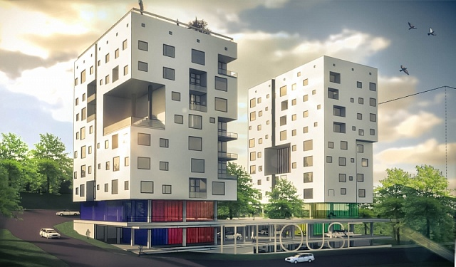
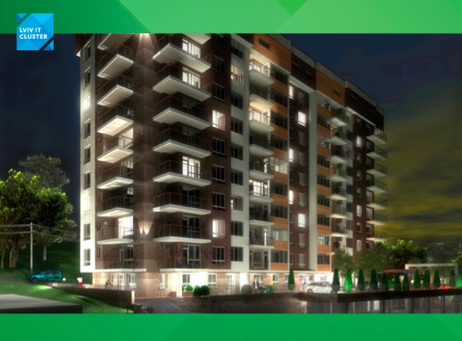
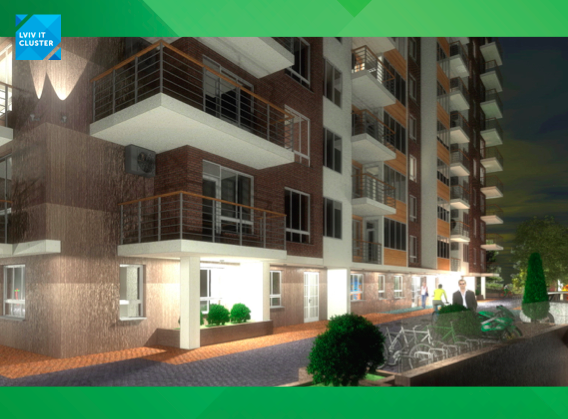

У Львові побудують будинок для ІТ-фахівців, що працюватиме на ВДЕ
Львівський IT-кластер поділився нещодавно цікавою новиною. «Айтішніки» зі Львова планують збудувати будинок на 72 квартири, придбати які зможуть виключно IT-фахівці, причому майже за собівартістю. Крім того, будинок проектується так, щоб з часом повністю відмовитися від газу і перейти на альтернативні джерела енергії, повідомляє видання AIN.UA
Ще минулого року керівництво львівського IT-кластера звернулося з такою незвичною ініціативою до міської ради, і мер міста підтримав перспективну ідею. Тому наразі львівська влада бере участь у проекті як партнер, який безкоштовно надасть земельну ділянку.
Проект реалізовується за принципом кооперативного будівництва. Усі бажаючі придбати житло стають учасниками житлово-будівельного кооперативу, вносять оплату за квартиру визначеними частинами протягом періоду будівництва житла. Кооператив буде замовником будівництва. Розглядається варіант оплати частинами з фіксованим першим внеском.
Прийняти участь у проекті можуть виключно працівники компаній-учасників IT-кластеру, які проживають у Львові.
За оцінками кластера, будівництво розпочнеться у вересні-листопаді, а сам будинок буде будуватися 12-18 місяців. Очікуваний термін завершення будівництва – II квартал 2016 року.
Проект є неприбутковим, квартири будуть продаватися за собівартістю. Житло в будинку зі знижкою приблизно в 30% зможуть купувати співробітники IT-компаній, які входять в кластер. Вартість житла коливатиметься в межах $580-510 за м. кв. Вартість м. кв. може змінюватися у залежності від проекту будівництва та класу житла.
«Айтішна» новобудова буде з великими балконами для зон відпочинку, у будинку буде знаходитись серверна, кімната для зустрічей, дитяча кімната, велосипедний паркінг, підземний паркінг, тераса (на даху), підключений швидкісний інтернет. Крім того, будинок проектується так, щоб з часом повністю відмовитися від газу і перейти на альтернативні джерела енергії. Розташується цей «чудо-будинок» за адресою: Львів, вулиця К. Студинського (Шевченківський р-н).
Експерти підрахували, що наразі у Львові проживає близько 10 000 IT-співробітників. За словами CEO кластера Степана Веселовського, на даний момент близько 1300 співробітників львівських IT-компаній потребують «поліпшення житлових умов». Автор проекту зізнається, що 72 квартири не вирішать житлову проблему в міста, але принаймні привернуть до неї увагу. Також Веселовський зазначає, що один з напрямків діяльності кластера - промо Львова як IT-центру. Автори проекту хочуть, щоб у перспективі Львів став привабливим містом для IT-професіоналів з інших регіонів.
|